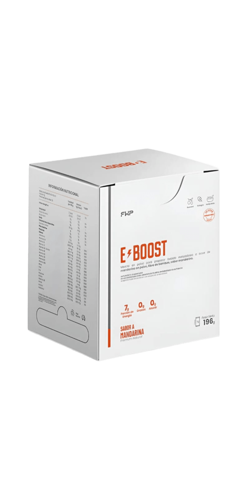
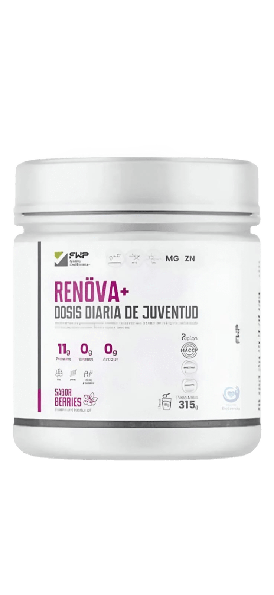
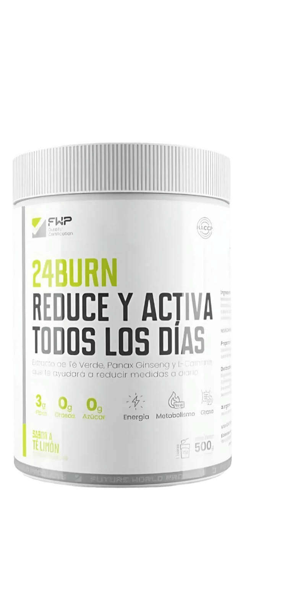

Selecciona un producto para ver su guía completa

Energía, Concentración y Recuperación Total. Suplemento de Alto Rendimiento.

Dosis Diaria de Juventud. Fórmula Antiedad de Alto Impacto con colágeno y vitaminas.

Reduce y Activa Todos los Días. Guía Completa de Ingredientes y Consumo.
Energía, Concentración y Recuperación Total.
Estudiar a alto nivel es una demanda física y mental agotadora. E-Boost no es una bebida azucarada; es ciencia aplicada para que tu cuerpo y tu cerebro no se "apaguen" cuando más los necesitas.
Muchos estudiantes no saben que menos músculo significa menos energía mental. El estrés de los certámenes y las malas noches consumen tu masa muscular, y ahí es cuando aparece la dependencia al café.
La Leucina protege tu músculo para que funcione como un generador de energía constante. Adiós a la sensación de "cuerpo pesado", los bostezos en clases tediosas y la neblina mental.
Contra el agotamientoTu cerebro vive de glucosa, pero si tus músculos no la procesan bien, tienes "picos y bajones" de sueño.
Hace que tus músculos capten mejor el azúcar en sangre. Es como si tu cuerpo aprendiera a usar mejor la bencina: gastas menos para hacer más. Energía estable durante jornadas extensas.
Glucosa optimizadaCuando estudias mucho, tu cerebro produce triptófano (serotonina) que te dice: "¡Duérmete, ya basta!". Eso se llama Fatiga Central.
La Valina compite con el triptófano para entrar al cerebro. Mantienes las "luces encendidas" y la mente alerta por más tiempo, retrasando la señal de sueño.
Bloquea la fatiga mentalLa yerba mate no es solo un estimulante; es un optimizador mental gracias a su mezcla de cafeína, teobromina y antioxidantes.
En el estudioAumenta la velocidad de procesamiento de información y mejora la memoria de trabajo.
La diferenciaA diferencia del café, su liberación de energía es gradual. Esto evita el "jitteriness" y te permite mantener un estado de alerta calma durante sesiones de lectura profunda.
Efecto físicoCombate la fatiga muscular que surge tras pasar muchas horas en la misma postura frente al computador.
La ciencia ha demostrado que un sistema digestivo inflamado "nubla" la mente. La fibra de bambú es el regulador clave aquí.
En el estudioEvita la somnolencia post-prandial. Al ralentizar la absorción de azúcares, mantiene tu glucosa estable y la mente clara y sin "neblina mental".
La diferenciaMejora la absorción de micronutrientes esenciales para las neuronas, asegurando que tu cerebro reciba el combustible que necesita sin gastar energía extra en una digestión pesada.
El algarrobo actúa como un carbohidrato de liberación lenta, proporcionando un flujo constante de energía al sistema nervioso central.
En el estudioPreviene los "crashes" o bajones de azúcar que causan irritabilidad y falta de paciencia al resolver problemas complejos.
La diferenciaSus antioxidantes protegen a las neuronas del estrés oxidativo que genera el estrés académico. Es el soporte perfecto para evitar el agotamiento de mitad de jornada.
Si sientes que el día no te alcanza o que el cerebro se te "nubla" después de un par de horas de lectura, esta combinación es tu mejor aliada.
Té NegroNo es solo energía; es enfoque inteligente. Gracias a la L-teanina, te mantiene despierto pero tranquilo. Ideal si los exámenes te dan ansiedad.
GuaranáEs como una batería de larga duración para tu cerebro. A diferencia del café, libera la energía poco a poco. Te ayuda a pensar más rápido y a estar más motivado.
Estas vitaminas son el combustible de tu cerebro.
Enfoque y MemoriaLas B6, B9 y B12 son críticas para crear neurotransmisores, los mensajeros químicos que te permiten conectar ideas rápidamente.
Adiós al "Burnout"Al optimizar la energía celular, reducen esa sensación de pesadez mental tras horas de estudio intenso.
Energía SostenidaLa Biotina y el resto del grupo B transforman lo que comes en energía real para que tu cerebro no se "apague" a mitad de la tarde.
Relaja el sistema nervioso y mejora el sueño, asegurando que lo aprendido se consolide mientras descansas.
Hierro y ZincEl hierro evita que te sientas agotado físicamente, mientras que el zinc mantiene tu función cognitiva aguda para resolver problemas complejos.
YodoRegula tu metabolismo para que mantengas un ritmo de estudio constante sin bajones de energía inesperados.
No hay nada peor que enfermarse en semana de finales. La Vitamina C y D mantienen tus defensas altas.
AntioxidantesEstudiar bajo presión genera estrés oxidativo; las vitaminas C y E protegen tus neuronas de este desgaste, manteniéndote "fresco" por más tiempo.
Además de dar color, actúa como un antiinflamatorio suave que ayuda a tu bienestar general.
SteviaTe da un sabor agradable sin el "choque" de azúcar que causaría sueño o falta de concentración después de consumirlo.
Ácido CítricoAsegura que tu cuerpo realmente absorba los minerales, para que nada de la fórmula se desperdicie.
Mayor Retención
Un cerebro sin fatiga memoriza un 40% mejor.
Recuperación Rápida
Te levantas con energía aunque hayas estudiado hasta tarde.
Foco Prolongado
Terminas tus tareas en menos tiempo porque no te distraes por el cansancio.
Modo de consumo
Disolver el contenido de 1 sachet (7 g) en un vaso con 200 ml de agua. Mezclar durante unos segundos hasta lograr una preparación homogénea. Consumir preferentemente en la mañana o antes de actividades que requieran mayor energía y concentración.
Toma este suplemento acompañado de alimentos, porque funciona mejor cuando tu cuerpo tiene proteínas y carbohidratos disponibles. Si no comes, tu cuerpo puede usar sus propias reservas de energía y eso aumenta el cansancio.
Para cada situación
En días de clases largas/tediosas: Disuelve una dosis en 500 ml de agua y bébelo a sorbos durante la clase. Mantendrá tu glucosa estable y evitará que "cabecees" de sueño.
En maratones de estudio (Boches): Tómalo al iniciar tu bloque más fuerte. La Valina bloqueará la fatiga mental antes de que aparezca.
Para evitar dolores de espalda y cuello: Los aminoácidos de E-Boost ayudan a la reparación muscular, reduciendo la sensación de cuerpo "molido" al día siguiente.
💧 Bebe suficiente agua durante el día para evitar deshidratación y facilitar la absorción de nutrientes.
E-Boost: porque tu carrera no solo
se gana con libros,
se gana con energía.
Dosis diaria de juventud · Colágeno + Vitaminas
Reduce y activa · Quemador metabólico
Dosis Diaria de Juventud.
Tu piel, tus articulaciones y tu cuerpo se van desgastando con el tiempo. RENÖVA+ está hecho para ayudarte a verte y sentirte mejor desde adentro, con colágeno y vitaminas que tu cuerpo realmente puede aprovechar.
RENÖVA+ es un suplemento de colágeno en polvo, creado por FWP, pensado para ayudarte a cuidar tu piel, tus articulaciones y tu cuerpo en general. Su fórmula incluye colágeno junto a vitaminas y minerales que trabajan juntos para que notes resultados reales: piel más firme, menos dolores al moverte y mejor bienestar día a día.
Lo que lo hace especial es que no tiene azúcar, gluten ni lactosa, y se endulza con stevia, una planta natural. Cada porción entrega 11 gramos de proteína de colágeno, que es justo la cantidad que los estudios muestran como necesaria para ver cambios reales en pocas semanas.
Tiene sabor a berries, se mezcla fácil en agua y puedes tomarlo todos los días sin complicaciones. Con el tiempo, se convierte en una de las mejores cosas que puedes hacer por tu cuerpo desde adentro.
Desde los 25 años, tu cuerpo empieza a producir menos colágeno cada año. Eso es lo que causa las arrugas, la flacidez y que la piel pierda esa firmeza de cuando eras más joven.
El colágeno de RENÖVA+ viene procesado en trozos muy pequeños, lo que hace que tu cuerpo lo absorba mucho mejor que el colágeno común. El resultado: piel más firme, lisa y con mejor color.
Firmeza y elasticidadLas rodillas, los hombros, los codos... todos tus huesos tienen cartílago, una "almohadilla" que los protege. Con los años, ese cartílago se va gastando y aparece el dolor al caminar o hacer ejercicio.
Este tipo de colágeno llega directo a las zonas articulares para ayudar a que ese cartílago se regenere, reducir la inflamación y lubricar mejor la articulación.
Movilidad sin dolorEl colágeno tipo III está en tus músculos y en las paredes de tus venas y arterias. Cuando escasea, la recuperación después del ejercicio se hace más lenta y el cuerpo se ve menos tonificado.
RENÖVA+ incluye este tipo de colágeno para que tus músculos mantengan su forma y se recuperen más rápido después del esfuerzo.
Fuerza y recuperaciónSin ella, tu cuerpo no puede fabricar colágeno correctamente, aunque lo estés tomando. Es como intentar construir una casa sin cemento.
¿Por qué es tan importante?Activa las sustancias dentro de tu cuerpo que "arman" y le dan forma al colágeno. Sin vitamina C, el colágeno que consumes no se aprovecha bien.
Protege tu piel del sol y la contaminaciónAyuda a neutralizar el daño que el sol, el smog y el estrés le hacen a tu piel todos los días. Resultado: piel más pareja, luminosa y con menos manchas.
Estos dos minerales son de los más importantes para que tu cuerpo funcione bien por dentro, y la mayoría de las personas los consume en cantidades insuficientes.
Magnesio — relaja y reparaReduce la inflamación del cuerpo, mejora la calidad del sueño y participa en la formación de proteínas estructurales como el colágeno.
Zinc — para piel, uñas y cabelloEs necesario para que las células encargadas de fabricar colágeno funcionen bien. Si te falta zinc, se nota: la piel se ve opaca, las uñas se quiebran y el cabello se adelgaza.
Tiene una capacidad increíble: retiene agua en tu piel y articulaciones, manteniéndolas hidratadas y con volumen.
¿Qué hace en tu piel?Viaja hasta las capas más profundas de la piel y la "rellena" de adentro, reduciendo las líneas finas y esa apariencia seca que da cuando la piel pierde agua.
¿Qué hace en tus articulaciones?Lubrica el espacio entre los huesos para que no haya fricción al moverte. Especialmente útil para las rodillas y caderas.
Estas dos vitaminas trabajan principalmente en lo que ves: tu piel, tu cabello y tus uñas, dándoles fuerza, brillo y resistencia.
Vitamina E — escudo protectorProtege las células de tu piel del daño diario causado por el sol, la contaminación y el estrés. Trabaja junto a la vitamina C para que la piel se mantenga sana y firme por más tiempo.
Biotina — para cabello y uñasCon uso regular de 4 a 6 semanas, las uñas se rompen menos, el cabello se cae menos y recupera cuerpo y brillo.
Es uno de los antioxidantes más potentes que existen en la naturaleza, presente en la piel de la uva negra.
Antiedad desde adentroActiva proteínas del cuerpo (llamadas sirtuinas) relacionadas con la longevidad celular. Es como encender el "modo reparación" de tus células, lo que se traduce en piel más luminosa y con menos signos de envejecimiento.
Potencia el colágenoAl proteger las fibras de colágeno del daño oxidativo, ayuda a que el colágeno dure más y trabaje mejor. Multiplica el efecto de los demás ingredientes de RENÖVA+.
11g de proteína de colágeno · 0g de azúcar · Bajo en grasa · Sin gluten · Sin lactosa · Endulzado con stevia
Vitaminas y minerales claveVitamina C · Magnesio · Zinc · Complejo B · Vitaminas A, D, E y K
Calidad garantizadaCertificación de calidad alimentaria · Sin alérgenos comunes · 315g por envase · Sabor berries natural
Primeros Resultados en 4 Semanas
Con 1 mes de uso diario ya empiezas a notar firmeza visible, piel más hidratada y textura notablemente más suave.
Piel · Cabello · Uñas
Piel más firme y luminosa, cabello más fuerte y uñas que resisten el quiebre.
Acción Integral
Actúa en piel, articulaciones, músculo, hueso y cabello simultáneamente.
Paso a paso para prepararlo
Pon 1 medida del producto (unos 10–11 g) en un vaso con 200–250 ml de agua fría o a temperatura ambiente. Revuelve por 20 a 30 segundos hasta que quede bien disuelto, sin grumos.
Nunca uses agua caliente o tibia. El calor destruye las vitaminas del producto y el colágeno pierde sus propiedades. Siempre agua fría o natural.
Tómatelo dentro de los 30 minutos siguientes a prepararlo. Algunas vitaminas se deterioran al estar expuestas al aire y la luz, así que no lo prepares con anticipación.
☀️ En la mañana, en ayunas: opción más recomendada para el colágeno. Con el estómago vacío, tu cuerpo lo absorbe sin competencia de otras proteínas, maximizando su aprovechamiento.
🌙 Antes de dormir: también es excelente, especialmente para los beneficios del magnesio. El magnesio favorece la relajación muscular y mejora la calidad del sueño, cuando el cuerpo repara tejidos y fabrica colágeno.
💧 Toma bastante agua durante el día: Al menos 2 litros. Esto ayuda a que el ácido hialurónico haga su trabajo de hidratación.
🌿 Usa protector solar: RENÖVA+ ayuda a generar más colágeno, pero el sol lo destruye. Con protector solar todos los días, los resultados se multiplican.
Tu cuerpo fabrica y repara el colágeno principalmente mientras duermes. Si duermes menos de 7 horas, los beneficios del suplemento se reducen bastante. Dormir bien no es opcional, es parte del tratamiento.
El cigarro daña activamente el colágeno que tu cuerpo tiene. El alcohol en exceso impide que tu cuerpo absorba bien el zinc y la vitamina C, reduciendo parcialmente los efectos del suplemento.
El ejercicio con resistencia estimula a tu cuerpo a producir más colágeno en músculos y articulaciones. Tomar RENÖVA+ unos 30 minutos antes de entrenar es ideal para que los nutrientes lleguen a donde más se necesitan.
Cuando comes mucho azúcar, esta se "pega" a las fibras de colágeno y las vuelve rígidas y débiles. Comer menos dulces y harinas refinadas potencia los resultados de RENÖVA+ de forma notable.
El sol es el principal enemigo del colágeno. La radiación UV lo destruye constantemente. Usar protector solar a diario, incluso en días nublados, protege el colágeno que RENÖVA+ ayuda a generar.
Los cambios en la piel y las articulaciones son lentos porque el colágeno tarda en formarse. Toma RENÖVA+ todos los días por al menos 8 a 12 semanas seguidas. La paciencia y la constancia son los ingredientes más importantes.
⚠️ Cosas importantes a considerar
Embarazo y lactancia: Si estás embarazada o amamantando, habla primero con tu médico o matrona antes de tomar este suplemento.
Alergia a proteínas de origen animal: El colágeno viene de animales (generalmente vacuno). Si tienes alguna alergia a este tipo de proteínas, revisa bien la etiqueta del producto.
Si estás tomando antibióticos: El zinc puede interferir con algunos antibióticos. En ese caso, deja pasar al menos 2 horas entre el antibiótico y el suplemento.
Problemas de riñón: Si tienes alguna enfermedad renal, consulta con tu médico antes de tomar el suplemento, ya que las proteínas en dosis altas pueden requerir más trabajo del riñón.
No reemplaza la alimentación: RENÖVA+ es un complemento, no un sustituto. Comer bien sigue siendo la base. El suplemento potencia eso, pero no lo reemplaza.
RENÖVA+: porque envejecer
es inevitable,
pero cómo lo haces, no lo es.
Energía, concentración y recuperación total
Reduce y activa · Quemador metabólico
Reduce y Activa Todos los Días.
Todo lo que necesitas saber sobre los ingredientes de 24BURN, cómo actúan en tu cuerpo y cómo tomarlo correctamente para obtener los mejores resultados.
El extracto de té verde es una fuente concentrada de catequinas, compuestos bioactivos que potencian el metabolismo, protegen el corazón y combaten el envejecimiento celular.
Termogénico + AntioxidanteLa L-carnitina es un compuesto derivado de aminoácidos que cumple un rol esencial en el metabolismo energético. Sin suficiente L-carnitina, la grasa no puede utilizarse eficientemente como combustible.
Combustión de grasaConocido por ser una fuente natural de cafeína, además contiene antioxidantes y compuestos estimulantes suaves. La cafeína se libera lentamente gracias a los taninos, evitando picos bruscos de energía.
Energía prolongadaLas catequinas actúan como "protectores metabólicos" al mantener activa por más tiempo la noradrenalina, el botón de arranque de tu cuerpo.
Modo Quema de GrasaJunto a la cafeína natural, ordena al cuerpo usar las reservas de grasa como combustible principal.
Gasto EnergéticoEleva la producción de calor corporal (termogénesis), aumentando el consumo de calorías incluso en reposo.
Al transformar la grasa en energía, el té verde evita la fatiga mental y mejora la concentración.
Análoga al celularEs como mantener procesos activos en "segundo plano": tu cuerpo sigue trabajando y consumiendo energía de forma eficiente.
El colesterol LDL actúa como un camión que transporta grasa. Si ese camión se oxida, deja residuos que tapan las arterias.
ProtecciónEl té verde evita que el LDL se oxide y se pegue a las paredes de los vasos sanguíneos.
CirculaciónMejora la elasticidad de las arterias, permitiendo que la sangre fluya mejor y el corazón se esfuerce menos.
Sus polifenoles actúan como un escudo que neutraliza los radicales libres, reduce la inflamación y preserva la integridad de tus células.
Vidrio protectorEs el "vidrio protector" que asegura que tu organismo dure más tiempo en buen estado.
¿Cómo actúa?
La L-carnitina ayuda a llevar la grasa al "motor" de las células para convertirla en energía, permitiendo que el cuerpo la use como combustible, especialmente cuando haces actividades del diario vivir.
🚗 La analogía del combustible: Si la grasa es bencina almacenada, la L-carnitina es el vehículo que transporta el combustible hasta el motor. Sin ese transporte, la energía no se produce de forma eficiente.
Usar la grasa como energía
Mejorar resistencia física
Disminuir fatiga
Apoyar recuperación muscular
Optimizar metabolismo energético
Reducción de grasa corporal
• Cafeína natural (en mayor concentración que el café)
• Taninos → liberación de cafeína más lenta y sostenida
• Polifenoles → antioxidantes que protegen las células
• Saponinas → compuestos vegetales con efecto estimulante leve
La cafeína bloquea receptores de adenosina (sustancia que produce sueño).
Resultados• Mayor estado de alerta
• Más concentración
• Menor sensación de cansancio
Estimula la liberación de adrenalina y noradrenalina:
Efectos• Mejora disposición para la actividad física
• Reduce percepción de fatiga
• Aumenta resistencia
Gracias a los taninos, la cafeína se libera lentamente, evita picos bruscos y disminuye el "bajón" posterior.
☕ vs. 🌿Si el café es como encender una luz intensa de golpe 💡, el guaraná es como usar un regulador que mantiene la luz estable por más tiempo 🔆
Fuente natural de yodo, magnesio, calcio y potasio. Estos minerales ayudan a regular funciones metabólicas del cuerpo.
Contiene alginatos que absorben agua, forman gel espeso y retardan el vaciamiento gástrico.
AnalogíaEs como tomar una esponja natural que se expande en el estómago, ayudándote a sentirte satisfecho por más tiempo.
Su contenido de yodo contribuye al funcionamiento de la tiroides, que regula la velocidad del metabolismo. Resultado: metabolismo más equilibrado.
La fibra del kelp mejora el tránsito intestinal, favorece una microbiota saludable y ayuda a regular la absorción de nutrientes.
¿Qué significa que sea adaptógeno?
Un adaptógeno actúa como un regulador del estrés: si el cuerpo está muy cansado → ayuda a recuperar energía; si hay sobrecarga mental → mejora concentración; si hay desgaste físico → favorece resistencia. No estimula de forma brusca; ayuda al cuerpo a responder mejor según lo que necesita.
📱 Si el cuerpo fuera un celular: El ginseng ayuda a que la batería dure más, evita que se sobrecaliente y permite que funcione mejor cuando lo usas mucho.
Energía mental
Favorece la función cerebral, mejora concentración y memoria, disminuye la fatiga mental.
Energía sostenida
Ayuda a optimizar la producción de energía celular. No produce "picos" bruscos como estimulantes fuertes.
Resistencia física
Ayuda al cuerpo a tolerar mejor el esfuerzo, disminuye percepción de cansancio y favorece recuperación.
Control del estrés
Ayuda a regular cortisol y mejora la capacidad de adaptación del organismo al estrés crónico.
Combate el cansancio
Reduce fatiga física y mental. Mantiene energía estable durante todo el día.
Adaptación
Mejor respuesta al estrés diario. Se adapta a lo que tu cuerpo necesita en cada momento.
La riboflavina participa en los procesos que permiten transformar los alimentos en energía utilizable por el cuerpo. Actúa principalmente como coenzima metabólica.
Funciones específicas• Contribuye a protección antioxidante celular
• Apoya salud de piel y mucosas
• Participa en metabolismo del hierro
La niacina es uno de los micronutrientes más versátiles del organismo. Sin estas vitaminas, el cuerpo no puede producir energía de forma eficiente.
Funciones específicas• Participa en más de 400 reacciones metabólicas
• Apoya sistema nervioso
• Contribuye a la salud cardiovascular
• Favorece la circulación sanguínea
Al mejorar la producción energética:
Resultados• Disminuye la sensación de cansancio
• Mejora el rendimiento físico
• Favorece la concentración y función cerebral
"Las vitaminas B2 y B3 ayudan a convertir lo que comes en energía, permitiendo que tu cuerpo y tu cerebro funcionen mejor y se sientan menos cansados."
🚗 AnalogíaSi los alimentos son combustible, estas vitaminas son las llaves que encienden el motor para producir energía. Sin ellas, el motor no funciona bien.
¿Qué hace la Vitamina A?
Relacionada con la protección celular, el sistema inmune y la salud de tejidos. Se encuentra en alimentos de origen animal como retinol y en vegetales como carotenoides (provitamina A).
🛡️ La Vitamina A es como: Un escudo protector que cuida las células y refuerza las defensas del cuerpo.
Acción antioxidante
Células más protegidas y envejecimiento celular más lento.
Sistema inmune
Contribuye a la producción y función de células defensivas. Mejora la respuesta frente a infecciones.
Regeneración celular
Favorece la renovación de tejidos y apoya la salud de piel, mucosas y órganos internos.
Función visual
Esencial para la visión normal. Participa en la adaptación a la oscuridad y contribuye a la salud de la retina.
Piel y tejidos
Mantiene piel y tejidos saludables y funcionales. Fortalece las barreras naturales del cuerpo.
Defensas naturales
Mantiene sanas las barreras naturales del cuerpo (piel y mucosas). Actúa fortaleciendo las defensas naturales.
Es una fibra soluble de bajo aporte calórico que favorece la salud digestiva.
Funciones• Mejora el tránsito intestinal
• Favorece una microbiota saludable
• Retarda la digestión
• Prolonga la sensación de saciedad
Carbohidrato de fácil disolución que se utiliza como vehículo para transportar y estabilizar los ingredientes activos. No es un ingrediente activo; ayuda a que el producto funcione correctamente.
Funciones• Permite que el polvo se mezcle mejor
• Facilita la dosificación uniforme
• Aporta estabilidad a la fórmula
Son ácidos orgánicos presentes naturalmente en frutas que dan el sabor agradable y ayudan a que el producto se mezcle bien.
Funciones• Mejoran el sabor
• Favorecen la disolución en agua
• Pueden facilitar la absorción de algunos nutrientes
Sucralosa: Endulzante no calórico. No eleva la glucosa en sangre y no contribuye a caries dentales.
Dióxido de SilicioCompuesto mineral utilizado como antiaglomerante. Evita acumulación de humedad, previene grumos y mantiene el polvo suelto y estable.
💧 Forma general de consumo
Agregar 1 scoop a ras (15 g) en un vaso o botella. Mezclar con 200–250 ml de agua fría o a temperatura ambiente. Revolver hasta disolver completamente.
🌅 En la mañana: Ayuda a activar el metabolismo durante el día.
🏃 30 minutos antes de actividad física: Favorece el uso de grasa como energía.
🍽️ 30 minutos después del almuerzo: Ayuda a generar saciedad y disminuir antojos de la tarde.
🍎 Importante sobre la alimentación
❌ No dejes de comer aunque disminuya el apetito.
🔥 El producto ayuda a usar la grasa como energía, pero el cuerpo necesita nutrientes para funcionar correctamente.
🥗 Saltarse comidas puede generar fatiga, bajo rendimiento y malestar general.
Úsalo como complemento, no como reemplazo de comidas.
💧 Hidratación: Beber suficiente agua durante el día ayuda a mejorar el efecto de la fibra, evitar deshidratación y favorecer el metabolismo de grasas. Recomendación: al menos 5 vasos de agua al día.
Si la persona no come o bebe poca agua, podría presentar: dolor de cabeza por falta de hidratación y energía, sensación de debilidad o cansancio, heces más blandas (por efecto de la fibra).
Durante los primeros días: algunas personas son más sensibles a la fibra, puede haber mayor frecuencia de deposiciones, puede aumentar la frecuencia de orinar. Estos efectos suelen ser leves y temporales.
Depende de la tolerancia de cada persona: con estómago vacío → efecto más rápido; después de comer → absorción más suave para personas sensibles. Si produce malestar gástrico, preferir después de alimentos.
No consumir en caso de: embarazo o lactancia, sensibilidad a la cafeína, problemas cardíacos no controlados, hipertensión no tratada. Consultar a un profesional de salud si existen enfermedades crónicas.
24BURN: todos los ingredientes trabajando
en sinergia para que tu cuerpo
queme más y rinda mejor todos los días.
Energía, concentración y recuperación total
Dosis diaria de juventud · Colágeno + Vitaminas